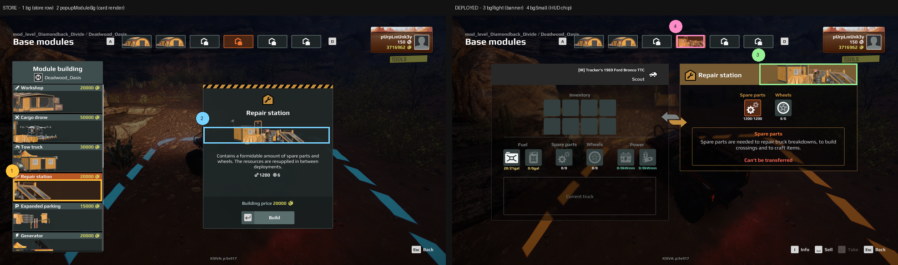

Module descriptor reference#
A base module is a thing the player buys at a deploy zone: a repair station, a
fuel station, a workshop. Its descriptor (BaseUpgradeDesc) sets what it is
called, what it costs, which models and pictures it uses, and, through
zoneProperty, what it does. This page lists every one of those fields. For the
step-by-step process of making a module, see
Custom FOB modules.
Field names and types come from the editor’s own type definitions. Identifiers and art symbols were read from the running game. Where something is measured in game rather than documented, it says so.
The twelve vanilla modules#
The game has twelve modules a player can buy. Each has its own page in this appendix. The names in the art columns are UI symbols inside the game’s bundle, not files; a descriptor refers to them by name.
| Module | moduleId |
bg |
bgRight |
bgSmall |
popupModuleBg |
iconMap40 |
iconTrade |
|---|---|---|---|---|---|---|---|
| Gas station | GAS_STATION |
moduleGasStation |
moduleGasStationRight |
moduleGasStationSmall |
moduleGasStationPopup |
moduleGazStationMap40 |
moduleGazStation48 |
| Warehouse | EXTRA_STORAGE |
moduleExtraStorage |
moduleExtraStorageRight |
moduleExtraStorageSmall |
moduleExtraStoragePopup |
moduleExtraStorageMap40 |
moduleExtraStorage48 |
| Essentials storage | DOUBLE_STOCK |
moduleDoubleStock |
moduleDoubleStockRight |
moduleDoubleStockSmall |
moduleDoubleStockPopup |
moduleDoubleStockMap40 |
moduleDoubleStock48 |
| Workshop | WORKSHOP |
moduleWorkshop |
moduleWorkshopRight |
moduleWorkshopSmall |
moduleWorkshopPopup |
moduleWorkshopMap40 |
moduleWorkshop48 |
| Repair station | REPAIR_ZONE |
moduleRepairStation |
moduleRepairStationRight |
moduleRepairStationSmall |
moduleRepairStationPopup |
moduleRepairStationMap40 |
moduleRepairStation48 |
| Service station | SERVICE_STATION |
moduleServiceStation |
moduleServiceStationRight |
moduleServiceStationSmall |
moduleServiceStationPopup |
moduleServiceStationMap40 |
moduleMapService48 |
| Generator | GENERATOR |
moduleGenerator |
moduleGeneratorRight |
moduleGeneratorSmall |
moduleGeneratorPopup |
moduleGeneratorMap40 |
moduleGenerator48 |
| Helipad | HELICOPTER |
moduleHelicopter |
moduleHelicopterRight |
moduleHelicopterSmall |
moduleHelicopterPopup |
moduleHelicopterMap40 |
moduleHelicopter48 |
| Expanded parking | PARKING |
moduleParking |
moduleParkingRight |
moduleParkingSmall |
moduleParkingPopup |
moduleParkingMap40 |
moduleParking48 |
| Cargo drone | DRONE_BASE |
moduleDroneBase |
moduleDroneBaseRight |
moduleDroneBaseSmall |
moduleDroneBasePopup |
moduleDroneMap40 |
mapDroneZone48 |
| Intelligence center | ANTENNA |
moduleComCenter |
moduleComCenterRight |
moduleComCenterSmall |
moduleComCenterPopup |
moduleRadarMap40 |
moduleRadar48 |
| Tow truck | TOW_TRUCK |
moduleEvacuator |
moduleEvacuatorRight |
moduleEvacuatorSmall |
moduleEvacuatorPopup |
moduleEvocuationMap40 |
moduleEvocuation48 |
Two more moduleId values exist but can’t be bought (cost -1):
BASE_MODULE, the base station every base starts with, and SUPPLY_SHOP, the
store. Both use the base station’s art (moduleBaseStation…).
The gas station is spelled two different ways
Its backgrounds are moduleGa**s**Station… and its icons are
moduleGa**z**Station…. That is Saber’s own inconsistency, it is in the
shipped bundle, and a name built by pasting the family prefix onto Map40
will silently resolve to nothing. Never construct a symbol name by
concatenation. Copy it from the table.
A dash means the game does not ship that symbol for that family. It is not an error to leave the matching field empty — the engine falls back to the default in the field table below.
The module identifiers#
zoneProperty.moduleId is the module’s identity. These are the values the
built-in modules use:
ANTENNA DOUBLE_STOCK EXTRA_STORAGE GENERATOR
BASE_MODULE DRONE_BASE GAS_STATION HELICOPTER
PARKING REPAIR_ZONE SERVICE_STATION SUPPLY_SHOP
TOW_TRUCK WORKSHOP
Reusing an identifier another mod holds empties the whole panel
The Base modules panel comes up completely blank, with the raw key
UI_BASE_BUILDING_SUBHEADER where its heading should be. No crash, no log
line, nothing in LegacyLog.txt.
Measured 2026-10-16: three mods had been colliding with vanilla
identifiers for weeks with a working panel. It broke only when a second
mod took DOUBLE_STOCK. Two shapes are known to work — an off-table id of
your own, or no moduleId at all.
The models#
A module has four model slots, and the one the player sees depends on where they build it.
| Field | Used when | Notes |
|---|---|---|
modelId |
main base | the medium model |
modelIdAdditional |
outpost | the small model |
modelAnimated |
main base, while building | the build animation |
modelAdditionalAnimated |
outpost, while building |
defaultDeployPoint on the deploy zone decides which pair is used. Twelve of
the thirteen built-in families ship a small_ twin; fob_module_storage has
none.
Replace only the medium model and every outpost stays vanilla
This is the most common surprise. If your module appears correctly at a main
base and as a stock amber box at an outpost, you set modelId and left
modelIdAdditional pointing at the built-in model.
Built-in model names follow models_fob_module_<family> with a small_ prefix
for the outpost variant and an _objective suffix for the animated one:
models_fob_module_extra_storage medium, finished
models_fob_module_extra_storage_objective medium, building
models_fob_module_small_extra_storage outpost, finished
models_fob_module_small_extra_storage_objective outpost, building
Every field you can set#
All 34 authorable members of BaseUpgradeDesc, from the engine schema.
Identity and text#
| Field | Type | Default | What it is |
|---|---|---|---|
uiName |
string | — | the name in the list and on the card |
uiDesc |
string | — | the flavour paragraph on the card |
uiDescTradeHeader |
string | — | heading on the trade panel |
uiTradeDefaultDescText |
string | UI_POPUP_TRADE_MODULE_DEFAULT_DESC |
fallback trade text |
Money#
| Field | Type | Default | What it is |
|---|---|---|---|
cost |
int | 0 |
build price |
sellPrice |
int | 0 |
refund when sold |
Behaviour#
| Field | Type | Default | What it is |
|---|---|---|---|
isInteractive |
bool | True |
must match the zoneProperty type, per Saber’s “Interaction with Player” table: True for storage, parking, workshop and drone delivery; False for service station, tow truck and antenna. The module checker flags a mismatch. What a mismatch does in game hasn’t been tested |
isLockedByDefault |
bool | False |
hidden until unlocked |
isOnlyOneAvailableAtDeployZone |
bool | False |
one per zone |
availableViaDroneDelivery |
bool | True |
orderable by drone |
isFromMod |
bool | False |
set by the loader, not by you |
Models#
| Field | Type | Default | What it is |
|---|---|---|---|
modelId |
string | — | medium model brand |
modelIdAdditional |
string | — | small model brand |
modelAnimated |
string | — | medium build animation |
modelAdditionalAnimated |
string | — | small build animation |
modelOffset |
mod | null | position nudge |
modelAdditionalOffset |
mod | null | position nudge, small |
modelYRotation |
float | — | facing, degrees |
modelAdditionalYRotation |
float | — | facing, degrees, small |
animationStagesProgress |
int | — | build stage map, e.g. {stage_0: 0, stage_1: 1} |
animationAdditionalStagesProgress |
int | — | the same for the small model |
The zone#
| Field | Type | Default | What it is |
|---|---|---|---|
zoneProperty |
mod | null | what the module does. See below. |
soundsFadeParams |
mod | null | audio fade |
Every picture, and where it lands#
Eleven fields take an image. This is the part that is easiest to get wrong, because a wrong name does not fail loudly — it draws a placeholder.
| Field | Default | Where it appears |
|---|---|---|
bg |
moduleSlotContent |
the wide artwork in the list row |
bgRight |
moduleSlotContentRight |
the banner above the module’s card when the player uses it |
bgSmall |
moduleSlotContentSmall |
the chip in the HUD strip of built modules |
popupModuleBg |
"" |
the big picture on the build card. A vanilla symbol or "" only, never a mod PNG |
iconMap40 |
— | the 40 px marker on the map |
iconTrade |
— | the 48 px icon on the trade panel |
icon20 |
— | 20 px, inline |
icon40 |
— | 40 px, inline |
iconModuleBg |
"" |
icon plate behind the glyph |
tradeArrowsSpecialIcon |
"" |
the arrows on a trade row |
uiDescTradeHeaderIcon |
— | glyph beside the trade heading |
A list row is 778 × 255 px in a 3840 × 2160 frame: a title strip about 55 px
tall carrying the name, the price and the small glyph, with the bg artwork
filling the roughly 200 px beneath it. The stock rows are down the left of this
capture (1), and the card in the middle (2) is what popupModuleBg fills:

Every built-in module’s own rows and card are on its page in Appendix A.
Composition, not just size
The artwork is left-anchored and fills the row height, and it clips off the left edge. A picture that is centred with margins reads as too small and floats in the middle of the row. Match the framing of the vanilla rows above, not just their pixel dimensions.
Download the template#
Start from the template, not from a blank canvas
expeditions-module-art-template.zip
Four correctly named transparent canvases at the exact sizes, four guide
sheets showing which part of each the game crops or covers, a README, and a
descriptor snippet you can paste. Rename MODNAME to your module and paint
inside the blanks.
Supplying your own pictures#
A mod ships PNGs in ui/textures/ and names them in the descriptor without
the extension and without the folder:
ui/textures/mymodule_bg.png -> "bg": "mymodule_bg" 380 x 92
ui/textures/mymodule_right.png -> "bgRight": "mymodule_right" 760 x 90
ui/textures/mymodule_small.png -> "bgSmall": "mymodule_small" 124 x 52
Only bg, bgRight and bgSmall may be custom PNGs
The game loads mod PNGs only for these three fields (MODULE_BG,
MODULE_BG_SMALL and MODULE_BG_RIGHT in its image loader). A mod PNG in
popupModuleBg draws the broken-image placeholder, seen in game; set it to
"" or a vanilla symbol.
The icon fields take UI symbol names from the game’s bundle, not files.
Pointing iconMap40 at a PNG you shipped does not work. Use a vanilla
symbol from the table at the top of this page.
A field naming something that is neither a shipped symbol nor a PNG in your mod draws a placeholder: a small yellow square with a red mountain in it. If you see that, the name is wrong.
What the module does: zoneProperty#
The descriptor describes the thing; zoneProperty describes its function.
The engine knows 72 zone-property types. These are the ones a base module uses:
| Type | Key members | Use |
|---|---|---|
ZonePropertyFobModuleStorage |
moduleId + all of inventory storage |
anything that holds or trades goods |
ZonePropertyFobModuleDefault |
moduleId |
a module with no inventory |
ZonePropertyFuelStation |
pricePerLiter |
engine-keyed fuel point |
ZonePropertyGenerator |
exchangeRate, fuelAmountForOneConvert, … |
fuel to electricity |
ZonePropertyHelicopter |
moduleId, transferCost |
transport |
ZonePropertyBaseBuilding |
modelPlacementZone |
where a module may be placed |
ZonePropertyDeploy |
fobModulesZones, defaultDeployPoint, maxTrucksNum |
the deploy zone itself |
Only seven module types are proven to work for a mod
What has actually been tested in game with a custom module:
| Type | For a mod | Tested with |
|---|---|---|
ZonePropertyFobModuleStorage |
✅ works | A custom fuel station with a single fuel slot, a custom repair station, a custom warehouse (8 slots, 4 heavy), and a custom essentials storage (fuel, parts, wheels and power slots) |
ZonePropertyWorkshop |
✅ works | A custom workshop that crafts, recycles and starts stocked |
ZonePropertyDroneDelivery |
✅ works | A custom cargo drone base |
ZonePropertyGenerator |
⛔ broken | six builds; each one emptied the module store and froze the game on exit to headquarters |
AntennaUpgradeDesc (with ZonePropertyFobModuleDefault) |
⛔ broken | builds and sells, never reveals an air drop, even with the game’s script patched. See Intelligence center |
ZonePropertyServiceStation |
✅ works | A custom service station: trucks in its area can add armor up to +20%, as vanilla. Tested October 2026 |
ZonePropertyHelicopter |
✅ works | A custom helipad, transferCost 30. Tested October 2026 |
ZonePropertyParking |
✅ works | A custom expanded parking: recoveryDiscount 0.1 cut a 1,000 recovery to 900. Tested October 2026 |
ZonePropertyTowTruck |
✅ works | A custom tow truck, recoveryDiscount 1.0: recovery to its base cost 0. Tested October 2026 |
ZonePropertyFuelStation, the others |
⚠ not yet tested | no custom module on them has been checked in game |
⇒ For a mod, start from one of the seven that work. A fuel station
built as ZonePropertyFobModuleStorage with one fuel slot is proven; see
the recipe below. Each module page in Appendix A
opens with the same verdict.
Shaping a storage module#
ZonePropertyFobModuleStorage inherits all of ZonePropertyInventoryStorage:
| Member | Type | Default | Meaning |
|---|---|---|---|
capacity |
int | 0 |
general cargo slots |
heavyInvCapacity |
int | 0 |
heavy cargo slots |
slotsSettings |
ZoneItemSlot | — | explicit slot list |
fuelSlotSettings |
mod | null | the fuel slot |
repairsSlotSettings |
mod | null | repair points |
wheelsSlotSettings |
mod | null | tyres |
electroSlotSettings |
mod | null | electricity |
expandedConsumablesCapacity |
float | 3 |
|
alwaysSpawn |
bool | False |
every vanilla storage-type module sets True |
isAtDeployZone |
bool | False |
set True for a base module |
allowPutConsumablesToHeavyInv |
bool | False |
|
isModelBreakageQuestProp |
bool | False |
|
isAffectedByAdditionalOutpostResourcesAbility |
bool | False |
specialist perk |
isAffectedByAdditionalAirdropResourcesAbility |
bool | False |
specialist perk |
isShown |
bool | True |
|
isAffectedByZoneSettings |
bool | True |
|
zoneDiscoverability |
mod | null | |
model |
mod | null |
A slot is a ConsumablesSlot:
{ "$type": "ConsumablesSlot",
"quantity": 1200,
"chance": 1.0,
"tradeFromTruckToZone": true }
What the slot fields mean
quantity is how much the slot holds. chance is a probability from 0 to
1, where 1.0 means always; vanilla modules use 1.0.
tradeFromTruckToZone controls only whether the truck may also put goods
back into the module. The module gives to the truck either way. Every
vanilla module sets it true. Saber’s zone docs describe it the same way.
If a truck can’t take goods and shows “Can’t be transferred”, check the truck first: the same message appears when the truck has no room left.
To build a fuel-only module, set capacity to 0, leave slotsSettings
empty, null the repairs, wheels and electro slots, and give it only
fuelSlotSettings with tradeFromTruckToZone: false. Verified working in game.
Checking your work#
Before you deploy, check the things that fail quietly:
- The descriptor — every image name is either a symbol from the table at the
top of this page or a PNG you actually shipped in
ui/textures/, and yourmoduleIdis not one another mod already holds. - All four model slots — not just
modelId. An outpost usesmodelIdAdditional, and leaving it unset is why a module looks right at a main base and vanilla at an outpost. - Every level of detail, not just the full-detail mesh. The game draws the reduced versions at normal viewing distance, and each one is simplified separately. A model whose texture looks right close up can be wrong a few metres away, so look at it from a distance as well as up close.
A clean check is not proof
Every check above can pass on a module that still looks wrong in game. The arbiter is the running game. Deploy it and look at it.